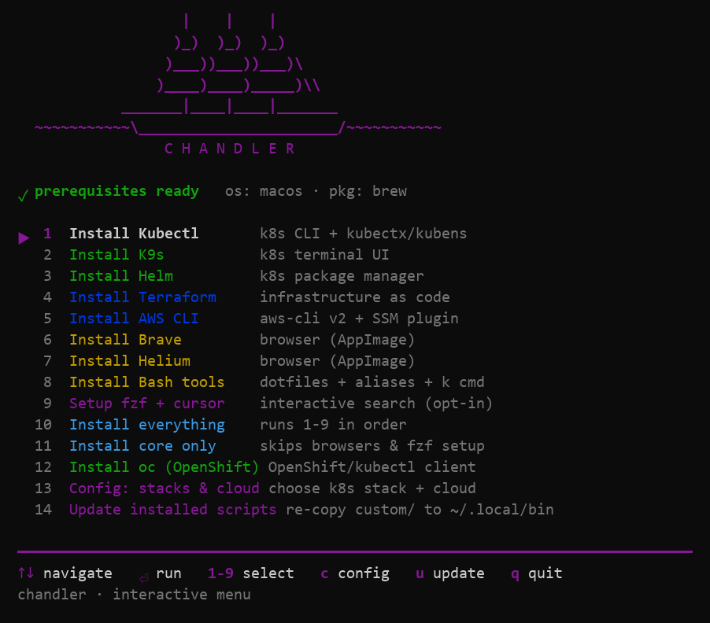
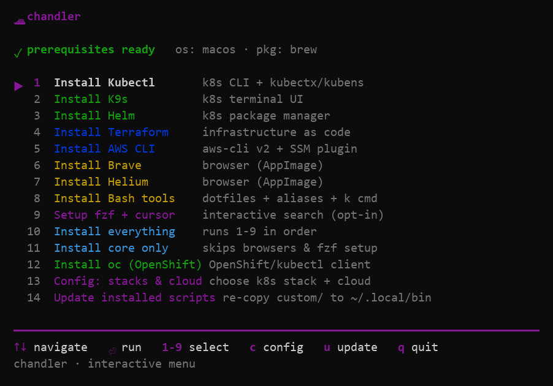

One self-contained binary that detects the platform and installs the everyday k8s/cloud ops toolkit — with a full TUI to drive it.
Pick tools from a menu, multi-select, see what's already installed — markers tell you at a glance.
Installers travel inside the binary and verify every download against upstream checksums.
chandler doctor health-checks the installed toolkit and flags what's broken or missing.
Refresh installed tools or just see what's stale, without touching the rest.
Chandler can put itself on the PATH — and cleanly remove itself again.
A sealed authorship claim rides inside the binary; chandler claim verifies it.


macOS ships as Chandler.app (unsigned — right-click → Open the first time). Linux, FreeBSD and Windows zips are in every release.